Problemas de posiciones relativas
1Hallar la ecuación de una recta que pasa por el punto (1, 0, 2) y se apoya en las rectas:
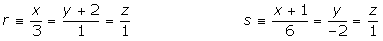
2Estudiar para los diferentes valores de a la posición relativa de los siguientes planos:
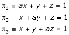
3Estudiar las posiciones relativas del plano 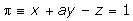 y la recta 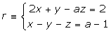 según los valores del parámetro a.
4Hallar la ecuación del plano que pasa por el punto de intersección de la recta 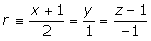 con el plano 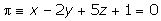 y es paralelo a las rectas:
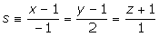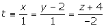
- 1
- 2
- 3
- 4
Ejercicio 1 resuelto
Hallar la ecuación de una recta que pasa por el punto (1, 0, 2) y se apoya en las rectas:
Obtenemos un punto genérico de la recta r.
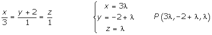
Obtenemos un punto genérico de la recta s.
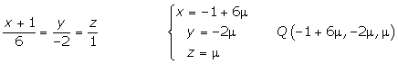
Calculamos la ecuación de la recta que pasa por P y Q.
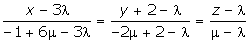
Como la recta pasa por el punto (1, 0, 2), tendremos:
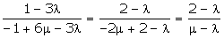
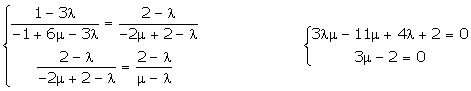
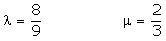
Sustituimos estos dos valores en la ecuación de la recta:
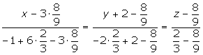
Operamos y simplificamos.
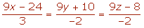
Ejercicio 2 resuelto
Estudiar para los diferentes valores de a la posición relativa de los siguientes planos:
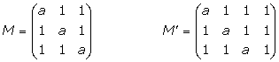
En el determinante de la matriz de los coeficientes sumamos a la primera fila las otras dos y posteriormente sacamos factor común.
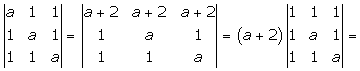
Restamos a cada fila la primera:
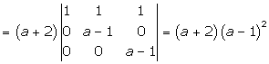

Los tres planos se cortan en un punto.
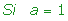
Las tres ecuaciones son idénticas, los tres planos son coincidentes.
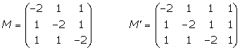
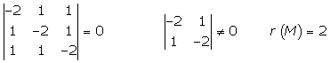
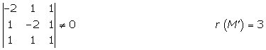
Como no hay ningún par de planos paralelos, los tres planos se cortan dos a dos formando una superficie prismática.
Ejercicio 3 resuelto
Estudiar las posiciones relativas del plano y la recta según los valores del parámetro a.
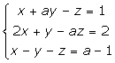
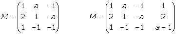
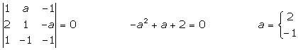
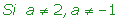
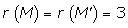
La recta corta al plano en un solo punto.
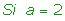
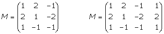
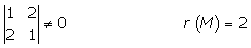
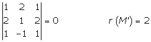
La recta está contenida en el plano.
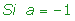
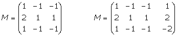

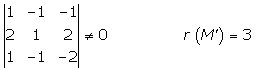
La recta es paralela al plano.
Ejercicio 4 resuelto
Hallar la ecuación del plano que pasa por el punto de intersección de la recta con el plano y es paralelo a las rectas:
Las ecuaciones continuas de la recta r se pasan a implícitas, y éstas junto a la ecuación del plano forman un sistema, cuya solución es el punto de intersección.
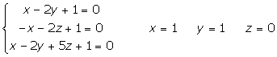
El plano viene determinado por el el punto de intersección y los vectores directores de las rectas paralelas al plano.
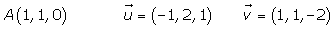
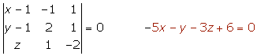
 Ejercicios
Ejercicios